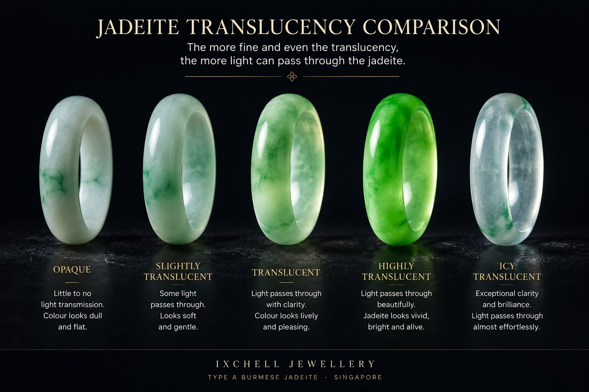
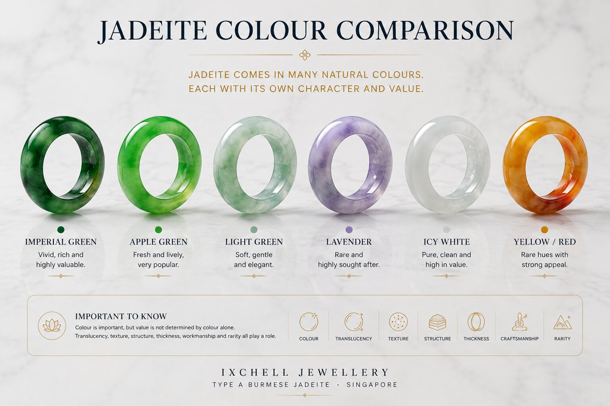
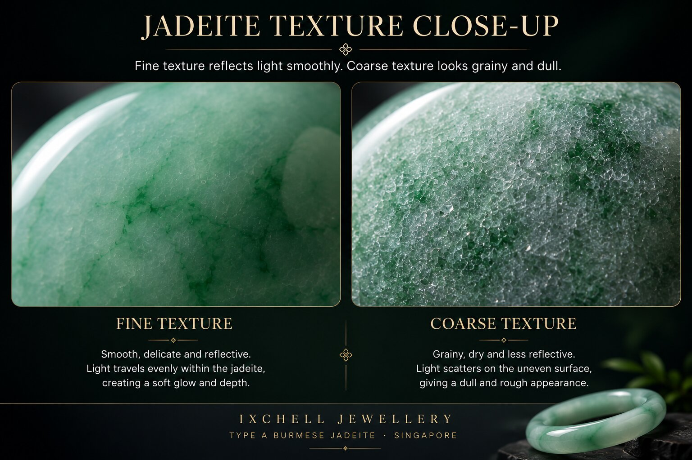
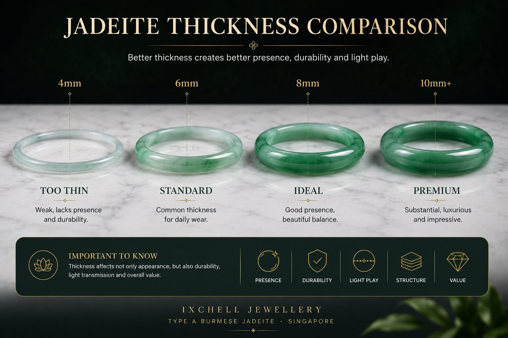
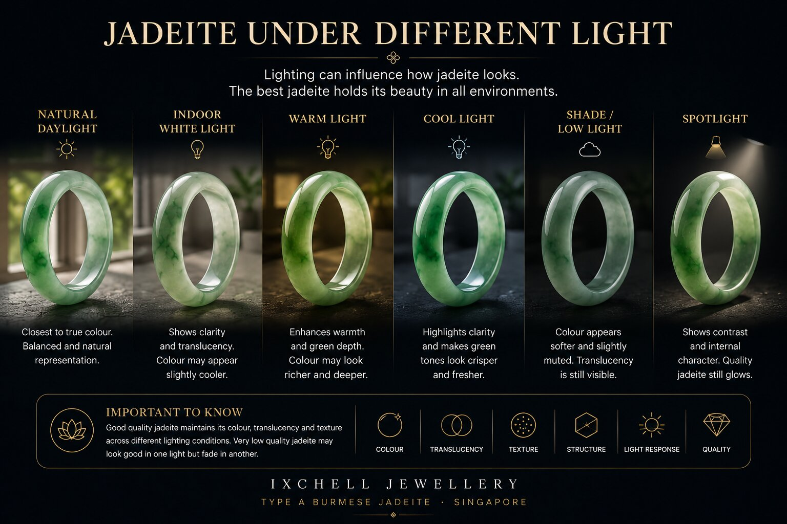
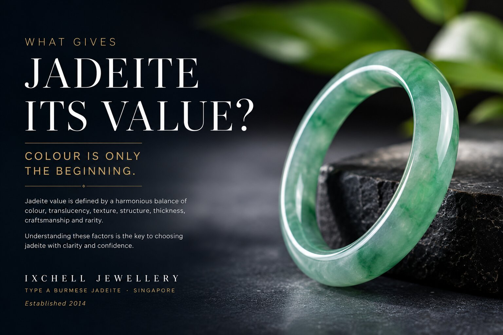

What actually gives jadeite value?
Many people think jadeite value begins and ends with colour. In reality, serious jadeite evaluation involves translucency, texture, structure, thickness, craftsmanship, rarity and how the stone behaves under real light.
A bright green piece may still be worth less than a calmer piece with superior structure and translucency. Jadeite value is never only one thing.
Quick answer: jadeite value is shaped by colour, translucency, texture, structure, thickness, craftsmanship, rarity, proportion and natural Type A status. Colour matters, but colour alone is not enough.
At Ixchell Jewellery Singapore, jadeite is explained through real viewing, not guesswork, so customers may understand how a piece behaves in ordinary light and beside the skin.
What gives Burmese jadeite value?
Fine Burmese jadeite value is usually determined by a combination of translucency, texture, colour, structure, thickness, craftsmanship, rarity and natural untreated Type A status.
Many first-time buyers focus only on strong green colour, but experienced collectors often pay close attention to how jadeite behaves under natural light, how calm the texture appears, and whether the translucency creates depth rather than flat brightness.
In Singapore and across Southeast Asia, highly valued jadeite is often appreciated for quiet refinement rather than aggressive appearance. Fine jadeite should remain beautiful under ordinary real-life lighting conditions rather than only under strong studio lighting.
The six major things that affect jadeite value.
Understanding jadeite value properly requires looking at several connected factors together rather than judging one isolated feature. This includes translucency, texture, light behaviour, thickness and whether the jadeite remains natural untreated Type A jadeite.

1. Translucency
Translucency is one of the strongest indicators of fine jadeite. Better translucency allows light to travel deeper into the stone, creating softness, glow and depth rather than flat surface colour.
Learn more in our jadeite translucency guide.

2. Colour
Colour matters greatly, but not simply “how green” something looks. Tone, saturation, distribution and harmony all affect value.
Even lavender, icy white or bluish jadeite may become highly valued if the texture and translucency are exceptional.

3. Texture
Texture refers to the crystal structure inside jadeite. Fine texture creates smoother light reflection and a calmer appearance.
Learn more in our jadeite texture guide.

4. Thickness
Many beginners overlook thickness completely. Thin jadeite may appear brighter because more light passes through it, but thickness also affects durability, presence and proportion.
Learn more in our jadeite thickness guide.

5. Behaviour Under Light
Jadeite changes dramatically under different lighting conditions. Daylight, warm indoor light, white LED lighting and shadows all influence appearance.
Learn more in our jadeite light guide.

6. Rarity & Craftsmanship
Fine Type A Burmese jadeite is naturally limited because quality raw material is rare. Matching colour, translucency and structure in one piece becomes increasingly difficult at higher grades.
Craftsmanship, proportion and setting quality also affect long-term desirability.
Why some jadeite looks expensive even without strong green colour.
One of the biggest misunderstandings in jadeite is assuming value equals strong green colour alone.
In reality, collectors often pay attention to calmness, translucency, texture and balance. Some highly valued jadeite pieces appear quiet and understated at first glance, yet become extraordinary when viewed closely under natural light.
This is part of why jadeite is considered subtle luxury rather than loud luxury.
Truthful jadeite rule: the best jadeite usually becomes more beautiful the longer you observe it. Extremely bright colour alone may catch attention quickly, but structure and texture are what often sustain long-term appreciation.
Why serious buyers still prefer viewing jadeite in person.
Camera exposure, filters, editing, screen brightness and lighting conditions can heavily distort jadeite appearance online.
At Ixchell Jewellery, we encourage calm in-person viewing because translucency, structure, texture and balance are easier to understand naturally rather than through aggressive editing or exaggerated lighting.
A piece should remain beautiful under ordinary real-life lighting — not only under studio lighting.
Ixchell Jewellery is a private jadeite boutique in Singapore specialising in natural Type A Burmese jadeite bangles, pendants, earrings and collector pieces near City Hall MRT at The Adelphi.
Why experienced collectors rarely judge from colour alone.
Colour may create first impressions, but translucency, texture and structure often decide whether jadeite continues to feel refined over time.
This is why some quieter jadeite pieces become more appreciated after repeated viewing, especially under natural daylight and ordinary daily conditions.
Fine Type A Burmese jadeite usually rewards slower observation rather than instant visual impact.
Common questions about jadeite value.
What gives jadeite value?
Jadeite value is affected by colour, translucency, texture, structure, thickness, craftsmanship, rarity, proportion and natural Type A status.
Is green jadeite always more valuable?
Not always. Fine green jadeite can be valuable, but weak texture, poor translucency or poor structure can reduce desirability. Lavender, icy white and other colours may also be valued when quality is strong.
Does translucency matter more than colour?
Both matter. Colour attracts attention, while translucency gives depth and life. The best jadeite usually balances several value factors together.
Does Type A jadeite mean high value?
Type A means the jadeite is natural and untreated, but value still depends on colour, translucency, texture, structure, thickness, craftsmanship and rarity.
Why should jadeite be viewed in person?
Jadeite changes under different light and beside different skin tones. In-person viewing helps reveal texture, translucency, body tone and real-life presence more honestly.
Related jadeite guides.
What is Type A jadeite?
Understand why natural untreated jadeite is the foundation of serious buying.
TranslucencyJadeite translucency
Learn why icy, watery and luminous jadeite can appear more refined.
TextureJadeite texture
Understand fine vs coarse texture and grain.
LightJadeite under light
Understand why jadeite changes under different lighting.
Choose jadeite with understanding, not pressure.
Understanding jadeite calmly often leads to better long-term decisions than rushing towards the brightest colour in one photograph. The finest jadeite usually reveals itself slowly — through light, texture, balance and quiet presence.